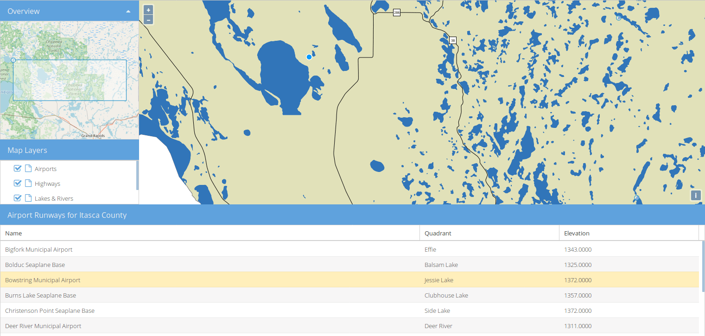

GeoExt-Quickstart¶
GeoExt ist eine JavaScript-Bibliothek, die im Browser ausgeführt wird und das ExtJS-Framework und die OpenLayers-Bibliothek kombiniert und erweitert. In diesem Quickstart werden die Schritte zum Erstellen einer umfangreichen Webanwendung mit GeoExt-Komponenten in weniger als 200 Codezeilen erläutert. Wir werden die installierten MapServer-Web-Services auf OSGeoLive als MapServer verwenden, um Karten-Layer für die Anwendung bereitzustellen. Wenn Sie die folgenden Schritte ausführen, wird die Demo-Anwendung GeoExt auf http://localhost/geoext/.
Contents
Create an HTML page¶
In this step we will set-up an empty HTML page which will contain the application. We’ll use the text editor Leafpad installed on OSGeoLive to create a new HTML file at /var/www/html/geoext/demo.html
Open Leafpad from the command line with elevated permissions (so you can save the file) using the command below:
sudo leafpad
Fügen Sie den folgenden HTML-Code ein. Dieser enthält Links zu den JavaScript-Bibliotheken ExtJS und OpenLayers sowie zwei CSS-Dateien, die zum Formatieren von ExtJS- und OpenLayers-Komponenten verwendet werden.
Wir verwenden die Klasse ‚‘Ext.Loader‘‘, um in GeoExt JavaScript-Quelldateien zu laden. Diese befinden sich alle im Ordner ‚‘src‘‘ in ‚‘/var/www/html/geoext/‘‘.
<!DOCTYPE html> <html> <head> <meta charset="utf-8" /> <title>OSGeoLive | GeoExt QuickStart</title> <link rel="stylesheet" href="resources/theme-triton-all.css" type="text/css" /> <link rel="stylesheet" href="ol.css" type="text/css" /> <script src="ext-all.js"></script> <script src="ol.js"></script> </head> <body> <script> Ext.Loader.setConfig({ enabled: true, paths: { 'GeoExt': 'src/' } }); Ext.onReady(function () { // all JavaScript application code should go here }); </script> </body> </html>
You should now be able to view an empty HTML page in Firefox at http://localhost/geoext/demo.html
All the JavaScript in the following sections should be pasted after the // all JavaScript application code should go here comment in the
Ext.onReady function. Placing code here ensures the JavaScript libraries have been loaded before running any custom JavaScript code.
Configure OpenLayers objects¶
Next we will configure some OpenLayers objects used by the application.
First lets create a map tile layer using OpenStreetMap, and some WMS layers that are available from the MapServer Itasca demo on OSGeoLive.
var map; var mapServerUrl = 'http://localhost/cgi-bin/mapserv?map=/usr/local/www/docs_maps/mapserver_demos/itasca/itasca.map&'; var osmLayer = new ol.layer.Tile({ source: new ol.source.OSM(), name: 'OpenStreetMap' }); var wmsLayer1 = new ol.layer.Image({ source: new ol.source.ImageWMS({ url: mapServerUrl, params: { 'LAYERS': 'ctybdpy2' } }), name: 'County Boundary' }); var wmsLayer2 = new ol.layer.Image({ source: new ol.source.ImageWMS({ url: mapServerUrl, params: { 'LAYERS': 'lakespy2' } }), name: 'Lakes & Rivers' }); var wmsLayer3 = new ol.layer.Image({ source: new ol.source.ImageWMS({ url: mapServerUrl, params: { 'LAYERS': 'majrdln3,majrdln3_anno' } }), name: 'Highways' });
Als nächstes werden wir in einem WFS-Vektor-Layer hinzufügen - dies ist etwas komplizierter, aber folgt dem gleichen Ansatz der Erstellung einer Quelle und einer Ebene - also wie beim vorherigen Layer:
var vectorSource = new ol.source.Vector({ format: new ol.format.GeoJSON(), url: function (extent) { return mapServerUrl + 'service=WFS&' + 'version=1.1.0&request=GetFeature&typename=airports&' + 'outputFormat=application/json&srsname=EPSG:3857&' + 'bbox=' + extent.join(',') + ',EPSG:3857'; }, strategy: ol.loadingstrategy.bbox }); var vectorLayer = new ol.layer.Vector({ source: vectorSource, name: 'Airports' });
Jetzt erstellen wir unser OpenLayers-Kartenobjekt, das mit den Layern konfiguriert ist, die wir gerade erstellt haben. Wir legen auch die Mittelpunkt- und Zoomstufe der Karte fest und fügen eine ausgewählte Interaktion hinzu, damit wir Features in unserem Vektor-Layer auswählen können.
var map = new ol.Map({ layers: [ wmsLayer1, wmsLayer2, wmsLayer3, vectorLayer ], view: new ol.View({ center: ol.proj.fromLonLat([-93.33, 47.32]), zoom: 6 }) }); var selectInteraction = new ol.interaction.Select(); map.addInteraction(selectInteraction);
Work with GeoExt components¶
Now the map and layers have been configured we are going to create and configure our GeoExt components.
First of all we will create a
GeoExt.component.Map. This uses the OpenLayers map we created, and will be positioned in the ‚center‘ region of our application.var mapComponent = Ext.create('GeoExt.component.Map', { map: map, region: 'center' });
Als Nächstes erstellen wir eine Ebenenbaum-Komponente. Der Baum hat einen eigenen Datenspeicher - ‚‘GeoExt.data.store.LayersTree‘‘‘, den wir mit Layern aus unserer OpenLayers-Karte füllen. Der Speicher wird verwendet, um unseren Ebenenbaum zu füllen. Wir fügen dem Baum auch ein Plugin hinzu, damit die Reihenfolge des Karten-Layers durch Ziehen und Ablegen der Layer geändert werden kann. Die Eigenschaft ‚‘flex‘‘ bewirkt, dass das Ebenenbaum-Fenster den gesamten verfügbaren Platz in seinem Bereich des Bildschirms auffüllt.
var treeStore = Ext.create('GeoExt.data.store.LayersTree', { layerGroup: map.getLayerGroup() }); var layerTreePanel = Ext.create('Ext.tree.Panel', { title: 'Map Layers', width: 300, flex: 1, store: treeStore, rootVisible: false, viewConfig: { plugins: { ptype: 'treeviewdragdrop' } } });
Wir werden auch ein Grid-Komponente erstellen, um die Attribute der Features von unserem WFS-Layer anzuzeigen. Ähnlich wie im Layerbaum-Speicher und im Ebenenbaum erstellen wir ein ‚‘GeoExt.data.store.Features‘‘-Speicher und einen Grid-Bereich.
var featureStore = Ext.create('GeoExt.data.store.Features', { layer: vectorLayer, map: map }); var featureGrid = Ext.create('Ext.grid.Panel', { store: featureStore, region: 'south', title: 'Airport Runways for Itasca County', columns: [ { text: 'Name', dataIndex: 'NAME', flex: 3 }, { text: 'Quadrant', dataIndex: 'QUADNAME', flex: 1 }, { text: 'Elevation', dataIndex: 'ELEVATION', flex: 1 } ], listeners: { selectionchange: function (sm, selected) { Ext.each(selected, function (rec) { selectInteraction.getFeatures().clear(); selectInteraction.getFeatures().push(rec.getFeature()); }); } }, height: 300 });
Unsere letzte GeoExt-Komponente ist eine Übersichtskarte - ‚‘GeoExt.component.OverviewMap‘‘. Wir konfigurieren diese so, dass der OpenStreetMap-Layer angezeigt wird, den wir zuvor erstellt haben, und ihn in einem ExtJS-Bedienfeld platzieren.
var overview = Ext.create('GeoExt.component.OverviewMap', { parentMap: map, layers: [osmLayer] }); var overviewPanel = Ext.create('Ext.panel.Panel', { title: 'Overview', layout: 'fit', items: overview, height: 300, width: 300, collapsible: true });
Create a viewport¶
Der letzte Schritt beim Erstellen unserer Anwendung besteht darin, ein Ansichtsfenster zu erstellen - einen Container, der die Anwendung darstellt, der alle oben erstellten Komponenten anzeigt.
var vp = Ext.create('Ext.container.Viewport', {
layout: 'border',
items: [
mapComponent,
{
xtype: 'container',
region: 'west',
layout: 'vbox',
collapsible: true,
items: [
overviewPanel,
layerTreePanel
]
},
featureGrid
]
});
Sie sollten nun in der Lage sein, den Link http://localhost/geoext/demo.html in Ihrem Browser zu aktualisieren und eine vollständige GeoExt-Anwendung ähnlich dem Bild unten anzuzeigen.
{kind=link}
Was kommt als Nächstes?¶
- Die GeoExt-Webseite beinhaltet eine vollständige API Dokumentation und Beispiele
- In einem GeoExt Workshop werden alle Schritte zum Konfigurieren und Verwenden von GeoExt3 in Ihren ExtJS-Anwendungen erläutert
- Die OpenLayers v4.6.5 API docs
- Die ExtJS 6.2.0 API docs